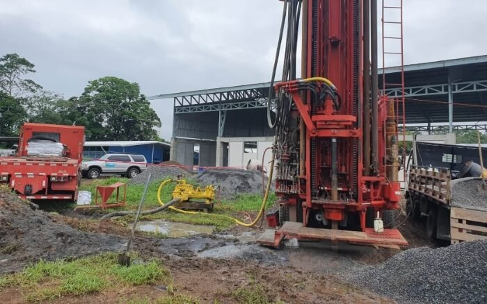

Pozo Perforado Escuela San Gerardo
Ubicación: Guápiles, Limón
Año: 2021

Pozo perforado Ocean Overlook
Ubicación: Ciudad Cortés, Puntarenas
Año: 2021


Mejoras en acueducto residencial
Ubicación: Dominicalito, Puntarenas
Año: 2021

Inspección de proyecto para aprovechamiento de nacientes
Ubicación: Pérez Zeledón, San José
Año: 2021


Cierre técnico de pozo
Ubicación: La Unión, Cartago
Año: 2021